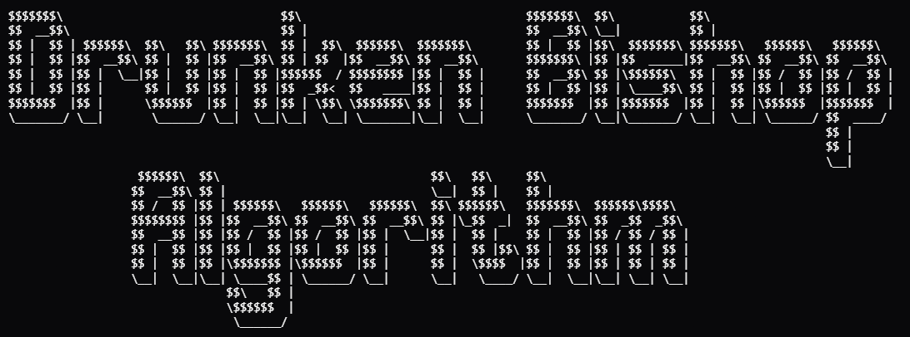

23 Janvier 2026
Lien vers l’exercice CodingGame

Ce puzzle coding game traite de la génération du SSH Randomart, aussi appelé Drunken Bishop Algorithm. C’est l’algorithme utilisé par OpenSSH pour produire des petits dessins ASCII afin de rendre une empreinte hexadécimale visuellement reconnaissable pour un humain.
Le but est que a partir d’une empreinte hexadécimale de 32 octets, on
déplace un “évêque” sur une grille 17×9, en partant du centre (8 ; 4)
notée S. Chaque octet de l’empreinte code 4 déplacements
diagonaux grâce à ses paires de bits. Une fois les 128 déplacements
effectués, chaque case de la grille affiche un symbole selon le nombre
de fois que l’évêque l’a visitée, et la case finale est marquée
E.
Afin de résoudre ce problème, on suivra l’algorithme suivant :
fingerprint = input()
# Symboles utilisés pour représenter le nombre de passages sur une case
SYMBOLES = [' ', '.', 'o', '+', '=', '*', 'B', 'O', 'X', '@', '%', '&', '#', '/', '^']
LARGEUR, HAUTEUR = 17, 9
# Grille qui va compter le nombre de passages sur chaque case
grille = [[0] * LARGEUR for i in range(HAUTEUR)]
# Position de départ du curseur
x, y = 8, 4
depart = (x, y)
# On sépare l'empreinte en octets
liste_octets = fingerprint.split(':')
for octet in liste_octets:
# On convertit l'octet hexadécimal en entier
valeur = int(octet, 16)
for n in range(4):
# On extrait la n-ième paire de bits (de droite à gauche)
paire = (valeur >> (n * 2)) & 0b11
# On associe chaque paire à une direction diagonale
if paire == 0b00:
dx, dy = -1, -1 # haut-gauche
elif paire == 0b01:
dx, dy = 1, -1 # haut-droite
elif paire == 0b10:
dx, dy = -1, 1 # bas-gauche
else:
dx, dy = 1, 1 # bas-droite
nx = x + dx
ny = y + dy
# Si le curseur sort de la grille, on annule le déplacement sur l'axe concerné
if nx < 0 or nx >= LARGEUR:
nx = x
if ny < 0 or ny >= HAUTEUR:
ny = y
x, y = nx, ny
# On incrémente le compteur de la case visitée
grille[y][x] += 1
# On mémorise la position finale
arrivee = (x, y)
print("+---[CODINGAME]---+")
for i in range(HAUTEUR):
ligne = "|"
for j in range(LARGEUR):
# On place S au départ, E à l'arrivée, sinon le symbole correspondant
if (j, i) == depart:
ligne += "S"
elif (j, i) == arrivee:
ligne += "E"
else:
# Le modulo évite de dépasser la taille de la liste
ligne += SYMBOLES[grille[i][j] % len(SYMBOLES)]
print(ligne + "|")
print("+-----------------+")Pour l’empreinte
16:27:ac:a5:76:28:2d:36:63:1b:56:4d:eb:df:a6:48 :
+---[CODINGAME]---+
| . |
| + . |
| . B . |
| o S + |
| . * o |
| o B + . |
| . O o . |
| .=E |
| .. |
+-----------------+Les cases centrales ont plus de passages (symboles denses comme
B, O), ce qui est logique car l’évêque part du
centre et à plus de chances d’y rester.
Voir la solution de NiXerasse sur CodingGame
bits = f'{int(input().replace(":", ""), 16):0128b}'
f = [[0] * 17 for _ in range(9)]
x, y = 8, 4
for i in range(0, 128, 8):
byte = bits[i:i+8][::-1]
for a, b in zip(byte[::2], byte[1::2]):
dx, dy = [(-1, -1), (-1, 1), (1, -1), (1, 1)][int(a + b, 2)]
x += dx * (0 <= x + dx < 17)
y += dy * (0 <= y + dy < 9)
f[y][x] += 1
for py in range(9):
for px in range(17):
f[py][px] = ' .o+=*BOX@%&#/^'[f[py][px] % 15]
f[4][8], f[y][x] = 'SE'
print('+---[CODINGAME]---+')
for r in f:
print('|' + ''.join(r) + '|')
print('+-----------------+')Cette solution à un peu près le même algorithme que le mien, mais la forme est différente.
La première différence majeure concerne la conversion de l’empreinte.
Là où je traite les octets un par un dans une boucle, NiXerasse
convertit toute l’empreinte en une seule chaîne de 128 bits dès le
départ avec f'{int(..., 16):0128b}'.
La deuxième différence est la gestion de l’ordre LSB-first. Dans mon
code, je l’obtiens grâce au décalage >> (n * 2). Ici,
l’octet est simplement inversé avec [::-1] avant d’en
extraire les paires.
La troisième différence est la gestion des bords. Au lieu d’un
if, le déplacement est multiplié par le résultat d’une
comparaison booléenne : dx * (0 <= x + dx < 17). Donc
si la nouvelle position sort de la grille, le déplacement est annulé par
la multiplication par 0.
Ce projet m’a permis de manipuler les bits en Python notamment les
décalages >> que je n’avais jamais utilisés avant.
J’ai aussi vu que l’ordre LSB-first est une convention du protocole
SSH.
En regardant la solution de NiXerasse, j’ai vu une autre facon de
gérer les bords en faisant la multiplication booléenne au lieu des
if.